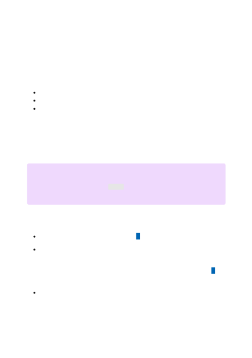

Learn how to customize a model for
your application
Article • 04/05/2023 • 51 minutes to read
Azure OpenAI Service lets you tailor our models to your personal datasets using a
process known as fine-tuning. This customization step will let you get more out of the
service by providing:
Higher quality results than what you can get just from prompt design
The ability to train on more examples than can fit into a prompt
Lower-latency requests
A customized model improves on the few-shot learning approach by training the
model's weights on your specific prompts and structure. The customized model lets you
achieve better results on a wider number of tasks without needing to provide examples
in your prompt. The result is less text sent and fewer tokens processed on every API call,
saving cost and improving request latency.
An Azure subscription - Create one for free
Access granted to Azure OpenAI in the desired Azure subscription
Currently, access to this service is granted only by application. You can apply for
access to Azure OpenAI by completing the form at https://aka.ms/oai/access .
Open an issue on this repo to contact us if you have an issue.
An Azure OpenAI resource
For more information about creating a resource, see Create a resource and deploy
７
Note
There is a breaking change in the create fine tunes command in the latest 12-01-
2022 GA API. For the latest command syntax consult the reference documentation
Prerequisites
Fine-tuning workflow